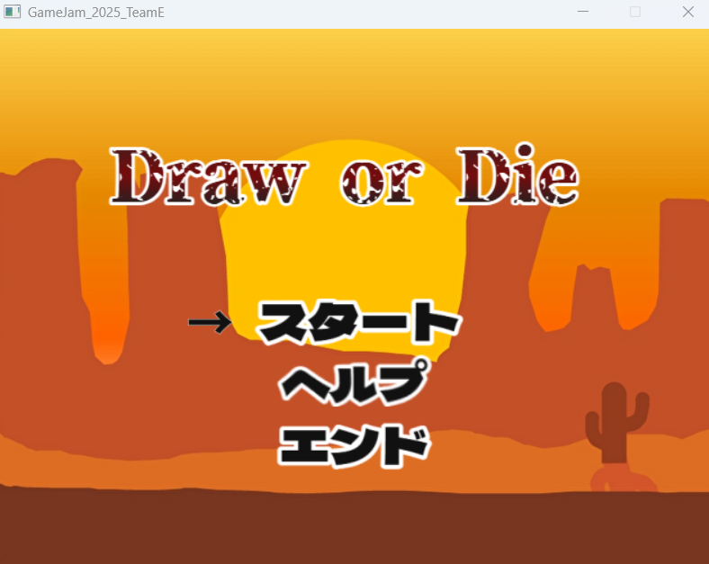
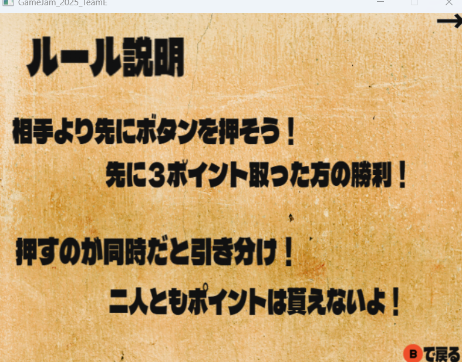
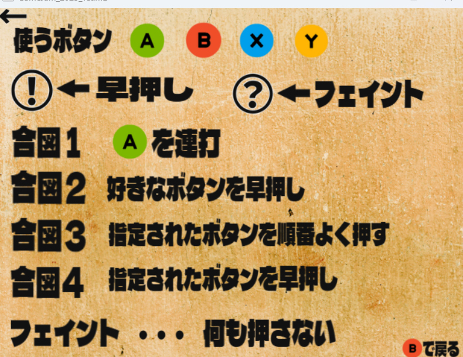
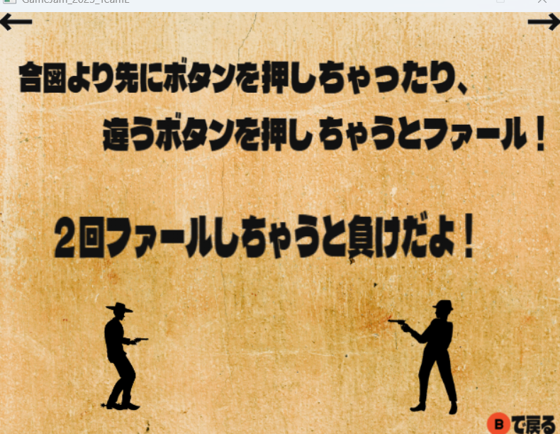
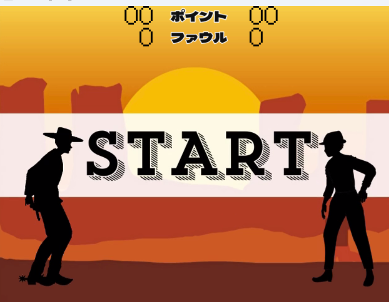
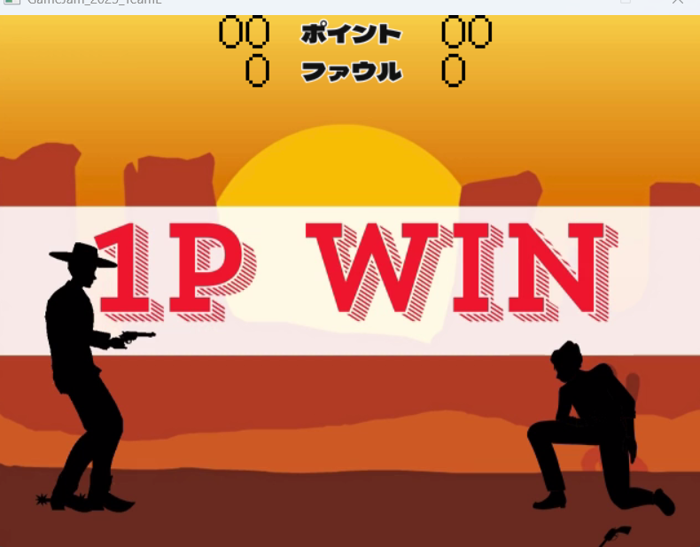
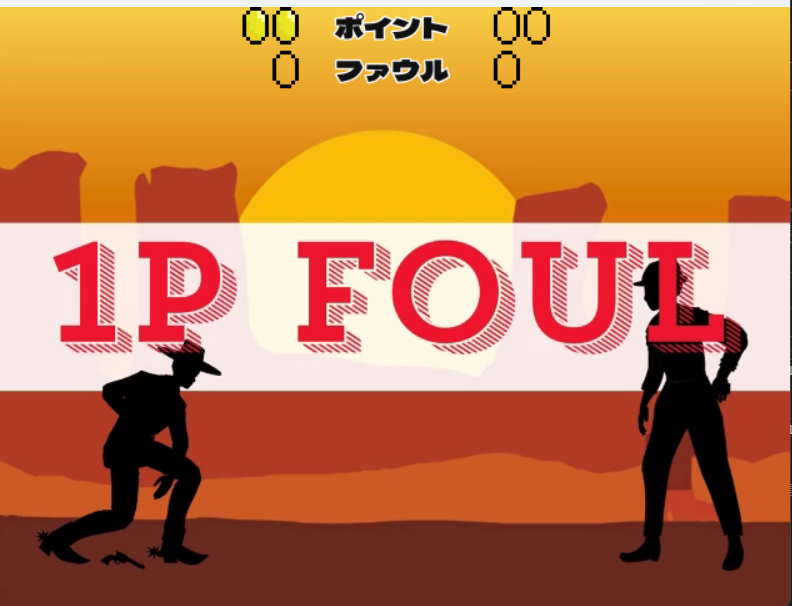
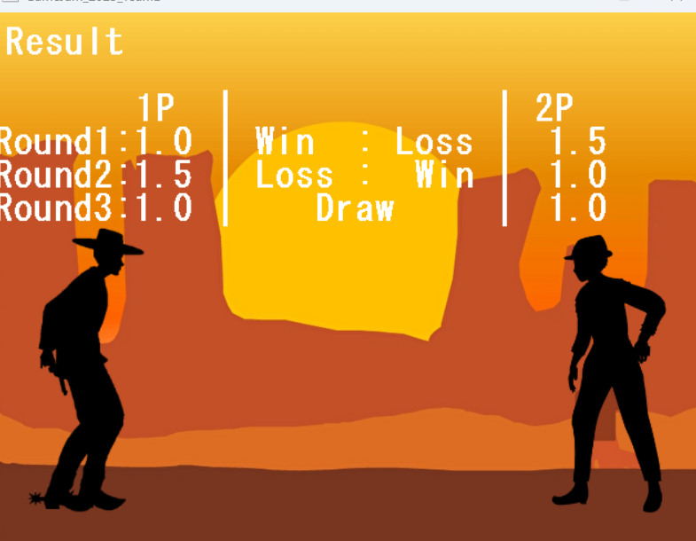

GAME DEVELOPMENT / GAME JAM 01
Draw or Die
相手より早く正しいボタンを入力する、2人対戦の早押しゲーム。西部劇風の早撃ち対決に、フェイント・連打・順番入力など、合図によって変化する操作を組み合わせました。
制作形態
1年次ゲームジャム / チーム制作
使用技術
C++ / DxLib
本人担当
企画・操作部分

ゲームの遊び方
2人が画面に出る合図に反応し、相手より早く正しいボタンを入力します。先に3ポイント取った側が勝利。合図前の早押しや誤入力ではファウルとなり、2ファウルで敗北します。ボタンを押さないことが正解になるフェイントもあります。
WIN CONDITION先に3点ポイント獲得で勝利
FOUL LIMIT2回早押し・誤入力で敗北
INPUT PATTERN4種類＋フェイント連打・早押し・順番入力など


誤入力・ファウルに関するヘルプ画面を見る

実際の対戦画面
スタートから判定、ラウンドの結果まで、実際のゲーム画面で紹介します。画像を選択すると原寸で開きます。




本人の担当と企画上の特徴
本人が担当したこと
ゲームの企画と操作部分を担当しました。複数の合図に応じて判断と入力が変わる遊びを、2人対戦の早撃ちゲームとしてまとめています。
本ページの画像はチームの完成画面です。グラフィック、全システム、結果画面のプログラムを本人単独で制作したという意味ではありません。
遊びの設計
単に速く押すだけでなく、合図の種類を見分けることが必要になる設計です。フェイントでは押さない判断が正解になるため、反射神経と判断の両方が問われます。
制作資料
チームのソース・ゲームデータはGitHubから確認できます。